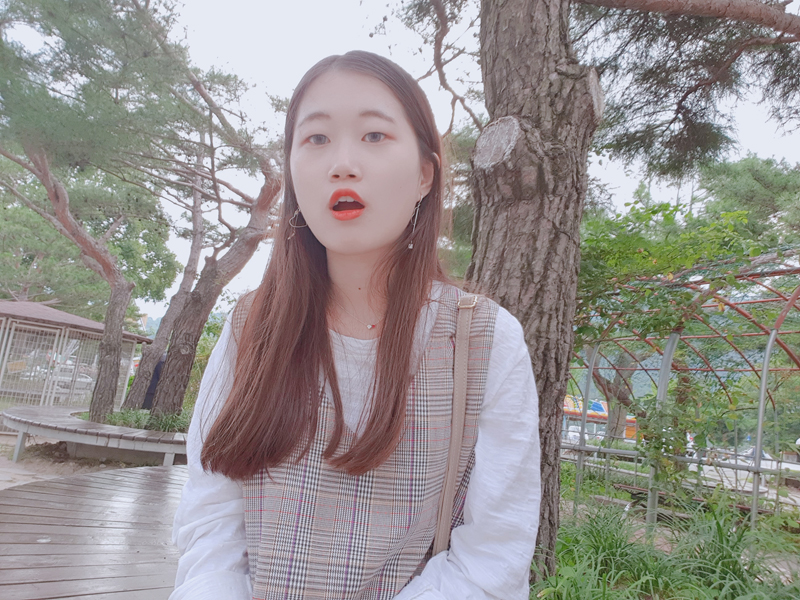

2018.11.30
친구들과 교복입고 놀이공원!
빛축제 기간이라서 볼것도 많고 사진 찍기에도 좋았다


이렇게 단체로 쪼르르르 사진 찍기도 하고
놀이기구도 타고~
83타워 가는길에 예뻐서 다같이 찰칵!
아쉽게도 83타워는 마감시간이후에 가서 올라가지는 못했지만 4층은 이용가능한 시간이라 4층에서!
4층의 야경도 짱!
11월의 마지막 20살의 소중한 친구들과 함께해서 행복한 시간이였다
2018.08.20
가족끼리 간 부산 여행!
(할머니, 고모, 작은아빠, 작은엄마)
기장에서 관람!
그이후 점심먹고 울산으로~~
울산 자수정동굴로

보트타고 보기로 결정!
짧은 자수성돌굴 탐방후 울산 바다보러
울산바다 본후 고모네 집에 자로~
짧은 여행이고 많은 곳을 가지 못해 조금 아쉬운 여행이었다
그래도 재밌는 여행이였다
2018.06.13
아는 언니와 함께 간 경춘선숲길!
그날에 갔던곳 중 제일 기억에 남는 장소였다!
그리고 나서 갔던 홍대! 홍대 라인스토어 입성!
그리고 분위기 독특한 카페에서 커피사서 커피도 마셨다